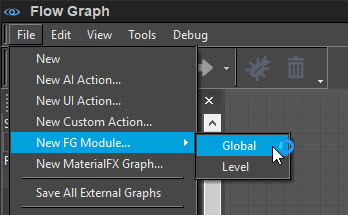
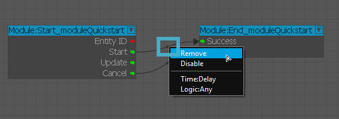
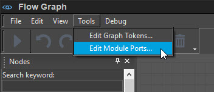
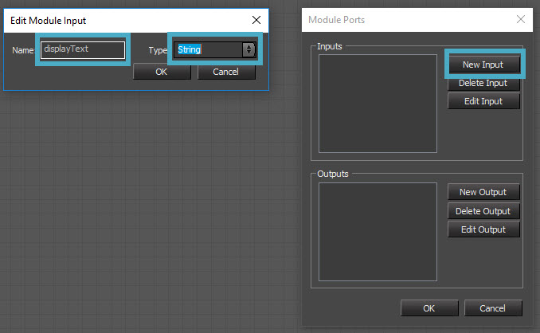
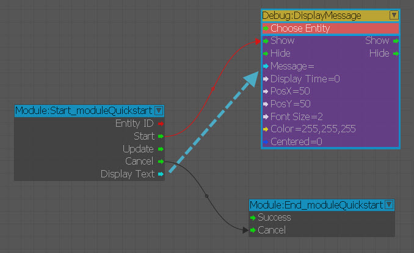
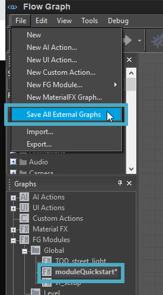

What are Flow Graph Modules?
One of the nicest features of Flow Graph that most users skip on using is that of a certain type of graph named Modules. The luxury of modules is that you can reuse complex graph functionality across your levels to lower the amount of repetitious work. The modules can be created on either a Global or Level basis and usually in production we take the following stance on which to choose:
- Global - Modules which are used in multiple levels should be created as Global modules.
- Level - Modules only used in a specific level should be created as Level modules.
The Modules exist in their own section of Flow Graph and can have ports exposed to be able to dynamically populate variable types that are triggered through external graphs. Some of the associated variable types are listed below:
- Bool - A true and false value.
- EntityId - The unique identifier for that entity within a scene.
- Float - A floating point number.
- Int - A whole value.
- String - A collection of letters to formulate a word (ex: "sample").
Let's look at how we set up a basic Module and expose our ports.
Creating Your Flow Graph Module
Follow the steps below to set up a simple Flow Graph Module in your scene:
- Open Flow Graph and click on File -> New FG Module -> Global and name your Module moduleQuickstart.
- Remove the Start connection between the Module:Start and Module:End nodes, because we will trigger our initial events through this port. Cancel can remain as it is in this given example.
- Now we need to create our ports in which we expose. By default we are strictly looking for Input ports initially so we will go to Flow Graph -> Tools -> Edit Module Ports... and then you will be presented with the variable entry window.
- Within this window we will be creating a simple String variable named "Display_Text" that will allow us to pass on the text. You should be able to see the String port as shown in the picture below.
- Create a Debug DisplayMessage node and then pass in the DisplayText port as the Message we will declare in a separate graph.
- Go to File -> Save All External Graphs so that we can make sure our global XML is saved to disk.
With the initial part of setting up your graph done, you can now go to the next chapter to go over how we will drive the String input port externally in a graph and print the text to the screen.
Step 1

Step 2

Step 3

Step 4

Step 5

Step 6
